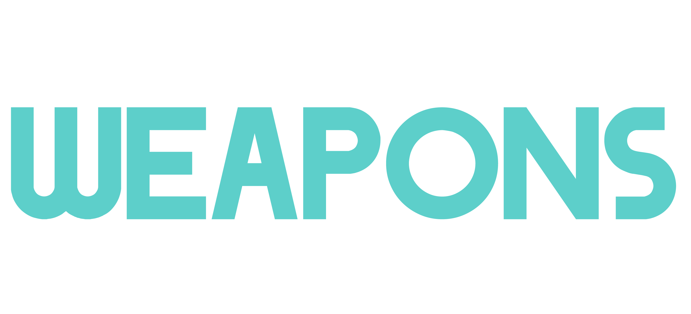

An Eco-Round, otherwise known as a Save-Round or simply as an Eco, is a tactic used by teams to conserve as much money as possible for future rounds. Typically you'll want to do this when the overall economy of the team is low (less than $6000 altogether). With the new changes to the economy, Eco-Rounds don't appear as often at the beginning of games now have more money to play around with. Regardless, it's important to know when the best time to hold off purchasing weapons to maximise your chances of winning in later rounds. You should purchase very little during these rounds - mainly pistols and/or one or two grenades. Spending more than $1000 is more of a Force Buy tactic which can be disastrous if you lose, whereas losing an Eco-Round is almost expected. That's not to say you cannot win Ecos, but it's important to understand your chances of winning during these rounds is significantly lower than usual. There are many strategies you can employ in an Eco-Round, though the one you've most likely seen on T-side is the 'Rush B' plan. Again, you aren't expected to win these rounds so it isn't a terrible idea to try something unorthodox. If the only thing you manage to do is plant the bomb during an Eco-Round, that's still money in the bank to spend next round.

Anti-Eco rounds are used by teams that have recognised the opposition is about to perform an Eco-Round. The idea behind this is to shut down the enemy team by not only taking them down while they are unable to buy good weapons, but also to maximise the amount of money you are able to earn by purchasing weapons that grant high kill awards. By completing a successful Anti-Eco round, the winning team can widen the economy gap, making it easier for them to win future rounds. If you know the enemy team's economy is so bad that they can only Eco, use this opportunity to purchase shotguns or SMGs (depending on the map you are playing). Without armour, these weapons are much more powerful compared to Full Buy rounds where both teams are equipped with the best gear available.

Full Buying is when a team's economy is so strong that they are able to purchase all the items they need to maximise their chances of winning the round (armour, grenades and an assault rifle/sniper rifle). For Ts, you are looking at spending roughly $4700, whereas CTs will have to fork out around $5500 as their weapons are more expensive and they will need a defuse kit to deactivate the bomb faster. Weapon - Award Per Kill ($)
The Åekill awardÅf that you receive for eliminating an enemy will depend on which weapon you are using at the time. See the list below for more details on the Competitive kill awards:

Force Buying (also referred to as a Half Buy) is a strategy which aims to utilise the teamÅfs poor economy by purchasing inferior equipment to avoid Eco'ing in the next round. This is certainly a risky strategy as a loss on a Force Buy round can destroy your economy, but the potential reward allows the Force Buying team to stabilise economy-wise. Deciding whether or not to Force Buy depends largely on how badly you are losing compared to the enemy team. If the game is heading into the final rounds, a Force Buy round might be the gamble your team needs to seal the victory. ItÅfs not recommended to constantly Force Buy as your team will always be at a disadvantage against a team that has been Full Buying.